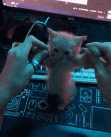
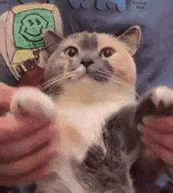
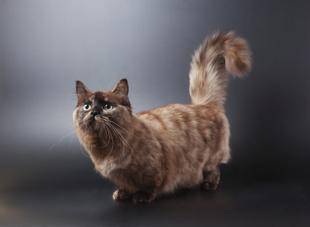

A Munchkin
Zsombor
Röviden A Munchkinról

A Munchkin egy macskafajta, amelynek fő megkülönböztető jellemzője a képviselőinek megjelenése.
Ezek
a
macskák összehasonlíthatók a tacskókkal. Az állatok hasonló mancsszerkezettel rendelkeznek. Ez a
fajta
egészen véletlenül jelent meg.
A fajta megjelenésének története
Senki nem vitte ki szándékosan Munchkinékat. A közönséges macskák utódaiban időszakosan megjelentek a
megzavart csontváz-szerkezetű cicák. Ezen esetek többségére az Egyesült Államokban és Németországban
került sor. A szokatlan állatok azonnal felhívták magukra a figyelmet, és fokozatosan szándékosan
kezdték őket tenyészteni. Most a munchkins az egyik legdrágább és legnépszerűbb macska.
Figyelemre méltó, hogy egy kóbor macskát regisztráltak első munchkinként. Ő lett a fajta úgynevezett
alapítója. Jelenleg hatalmas számú fajtája létezik a rágcsálásnak - vannak hosszú vagy rövid szőrű,
egyszínű és többszínű macskák, bolyhos és sima szőrű farkakkal.

Megjelenés és szokások
Kívülről a munchkins csak a mancsuk szerkezetében különbözik a hétköznapi macskáktól. Fejméretek,
testarányok - minden szabványos formában van. A kivétel a rövid lábak. A munchkins viselkedése és
szokásai egyedülállóak. Ezek a macskák testük tulajdonságai miatt nem különböznek rugalmasságukban és
sebességükben. Lassúak, sőt ügyetlenek és "görény technikával" mozognak - gyors és nagyon apró
lépésekkel.
Munchkin szokásai mindenkit megmosolyogtatnak. Az a tény, hogy a munchkin nagyon alacsony macska, a
terület vagy valamilyen konkrét tárgy megtekintéséhez az állatok a hátsó lábukon ülnek, elülső
végtagjaikat a test mentén nyújtják, és a farok segítségével támaszt teremtenek. Ennek a szokásnak a
miatt a németek még "kenguru macskának" is becézték Munchkinékat.

Egészsége: általában milyen egészségi állapota?
A „The International Cat Association“ (TICA; =Nemzetközi Macska Szövetség) megítélése szerint a kritikusok felfogásával ellentétben a rövid lábak nem járnak a mozgásképesség korlátozásával.
Mégis ennek az eredeti fajtának a képviselőinél nem ritkán diagnosztizálnak lordózist, ami a gerincoszlop elhajlását jelenti, erős ívben domborodik előre. A lordózisban érintett állatok gyakran fiatal korukban elhaláloznak. Az, hogy a betegség összefüggésben van-e a rövid lábakkal, nem tisztázott.
A szintén rövid lábú tacskóval ellentétben alapvetően a tacskómacska nem hajlamos a gerincoszlop megbetegedéseire.
Mire kell ügyelni ápolása során?

Attól függően, hogy milyen hosszú kedvence szőre, rendszeres időközönként meg kell kefélni. Így
megelőzheti bundája csomósodását. Ezenkívül a rendszeres szőrápolása azt is elérheti, hogy erősödjön az
Önök közötti kötődés. Nem utolsósorban pedig megkímélheti kedvenc kanapéját is a macskaszőrtől. Minden
macskás háztartásba elkél kaparófa. A tacskómacska is szívesen használja, és ily módon ápolja, illetve
élezi karmait. A kaparófa azt a célt is szolgálja, hogy megjelölje területét. Nem szükséges Önnek vágnia
karmait.